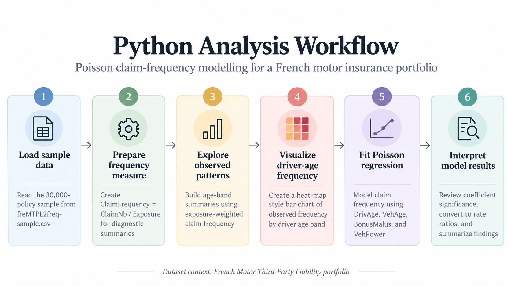

Modeling Auto Claim Frequency with Poisson Regression (Python)
Author
Sam Xu
Published
September 27, 2026
Question
ImportantAnalytical objective
Can a simple Poisson regression model explain automobile claim frequency using common insurance rating variables in a French motor insurance portfolio?
At a glance
Portfolio: French Motor Third-Party Liability insurance portfolio
Geography: France
Sample size: 30,000 policies
Goal: Evaluate whether a simple Poisson regression can explain claim frequency using common insurance rating variables
Method: Poisson GLM with claim count as the response and standard rating variables as predictors
Data
This analysis uses a 30,000-policy simple random sample drawn without replacement in R using set.seed(521) from the freMTPL2freq French Motor Third-Party Liability dataset, which represents automobile insurance policies from France.
The original dataset contains policy-level claim counts, exposure, driver, vehicle, and geographic characteristics.
import pandas as pdinsurance = pd.read_csv("freMTPL2freq-sample.csv")rows, columns = insurance.shapeprint(f"The analysis dataset contains {rows:,} policies and {columns} variables.")insurance.head()
The analysis dataset contains 30,000 policies and 12 variables.
IDpol
ClaimNb
Exposure
VehPower
VehAge
DrivAge
BonusMalus
VehBrand
VehGas
Area
Density
Region
0
4031193
0
0.05
7
8
26
80
B1
Regular
D
1055
Nord-Pas-de-Calais
1
165332
0
0.50
7
5
51
50
B5
Regular
E
3699
Ile-de-France
2
4157008
0
1.00
6
8
43
54
B3
Diesel
C
295
Centre
3
4033940
0
0.55
5
1
39
100
B12
Regular
B
79
Midi-Pyrenees
4
5008672
0
0.95
8
5
73
50
B12
Regular
D
634
Languedoc-Roussillon

Analysis workflow for the Python Poisson claim-frequency model.
Analysis
Claim frequency measures the number of claims relative to the amount of exposure. Because policies in the dataset have different exposure periods, comparing raw claim counts alone would not be appropriate.
The mean of the policy-level ClaimFrequency column should not be interpreted as the overall portfolio claim frequency. Because individual policies have different exposure periods, the portfolio-level measure is calculated using total claims divided by total exposure rather than by averaging individual policy frequencies.
To examine how observed claim frequency varies with driver age, drivers are grouped into age bands. Claim frequency for each group is calculated using total claims divided by total exposure.
Figure 1: Observed automobile claim frequency by driver age band in a French Motor Third-Party Liability insurance portfolio.
Observed claim frequency is highest for drivers aged 18–24, at about 0.181 claims per unit of exposure. Frequency drops sharply for the 25–34 group and remains lower across most older age bands, reaching its lowest level for drivers aged 65–74.
The 75–100 group shows a modest increase in frequency. These are descriptive portfolio-level patterns, not causal effects, and the groups contain different amounts of exposure.
TipKey takeaway
The descriptive age-band chart suggests that claim frequency is highest for younger drivers, while the regression results show that once several rating variables are considered together, the strongest modeled signals come from BonusMalus, VehPower, and VehAge.
Results
A Poisson generalized linear model is fitted to the policy-level claim counts. Policy exposure is included through a log-offset so that policies observed for different lengths of time are compared on a consistent basis.
import numpy as npimport statsmodels.api as smimport statsmodels.formula.api as smfpoisson_model = smf.glm( formula="ClaimNb ~ DrivAge + VehAge + BonusMalus + VehPower", data=insurance, family=sm.families.Poisson(), offset=np.log(insurance["Exposure"])).fit()poisson_model.summary()
Generalized Linear Model Regression Results
Dep. Variable:
ClaimNb
No. Observations:
30000
Model:
GLM
Df Residuals:
29995
Model Family:
Poisson
Df Model:
4
Link Function:
Log
Scale:
1.0000
Method:
IRLS
Log-Likelihood:
-4896.9
Date:
Mon, 28 Sep 2026
Deviance:
7504.4
Time:
13:48:29
Pearson chi2:
4.90e+04
No. Iterations:
7
Pseudo R-squ. (CS):
0.007700
Covariance Type:
nonrobust
coef
std err
z
P>|z|
[0.025
0.975]
Intercept
-4.3980
0.202
-21.732
0.000
-4.795
-4.001
DrivAge
0.0030
0.002
1.376
0.169
-0.001
0.007
VehAge
-0.0165
0.005
-3.051
0.002
-0.027
-0.006
BonusMalus
0.0247
0.002
15.693
0.000
0.022
0.028
VehPower
0.0452
0.014
3.216
0.001
0.018
0.073
ImportantModel signals
BonusMalus, VehAge, and VehPower are statistically significant in this model.
DrivAge is not statistically significant after controlling for the other included variables.
Because Poisson regression uses a log link, the raw coefficients are easier to interpret after exponentiation as multiplicative effects on expected claim frequency.
The rate ratios make the model effects easier to interpret. Holding the other variables constant, a one-unit increase in BonusMalus is associated with approximately a 2.5% increase in expected claim frequency, while a one-unit increase in VehPower is associated with approximately a 4.6% increase.
VehAge has a rate ratio below 1, corresponding to an estimated 1.6% decrease in expected claim frequency for each additional year of vehicle age. In contrast, the estimated effect of DrivAge is small and not statistically significant in this model.
These estimates describe conditional associations within the sampled French motor portfolio and should not be interpreted as causal effects.
Conclusion
The Poisson regression provides evidence that several common insurance rating variables are associated with claim frequency in this sampled French motor portfolio.
BonusMalus and VehPower are associated with higher expected claim frequency, while VehAge is associated with a modest decrease. DrivAge is not statistically significant after controlling for the other variables included in the model.
Overall, the model shows that claim frequency can be partially explained using standard policy and vehicle characteristics, although the low pseudo-R² indicates that substantial variation remains unexplained. The results should therefore be viewed as a simple baseline model rather than a complete pricing model.
NoteBottom line
The Poisson GLM identifies meaningful rating-variable associations, but its limited explanatory power means it should be viewed as a baseline model rather than a complete pricing framework.